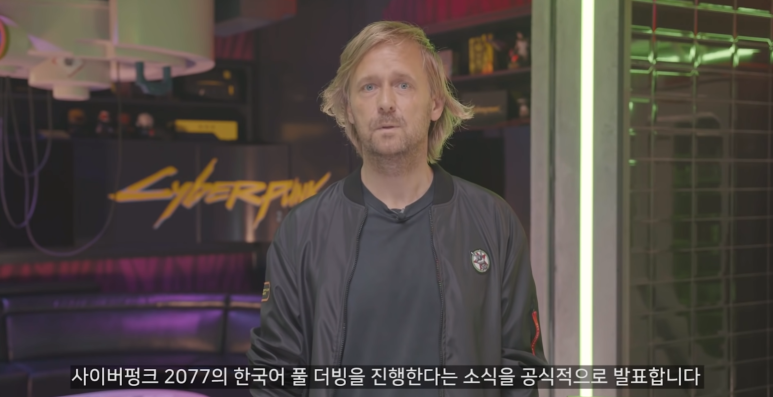
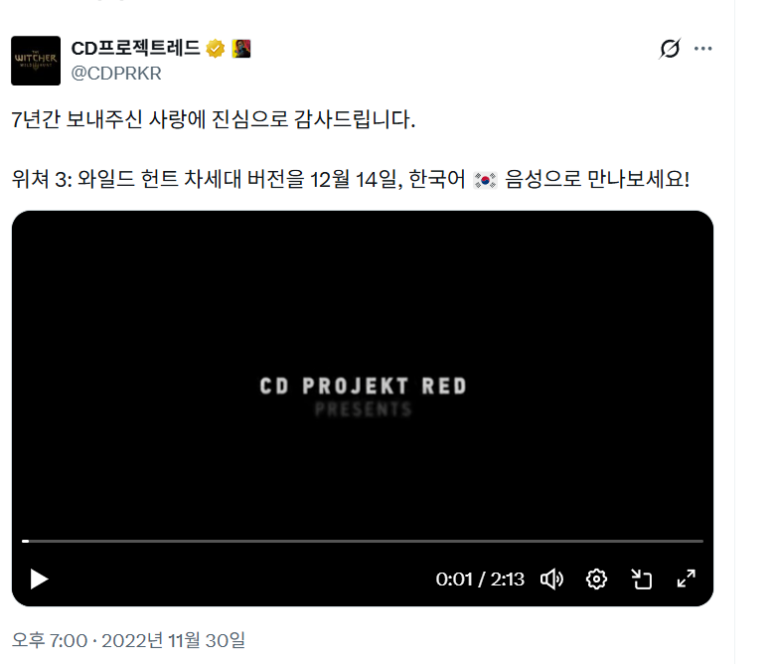
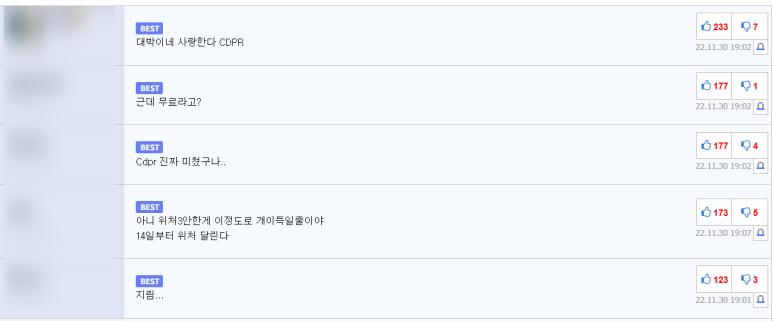
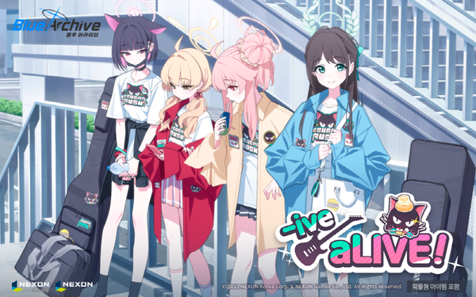
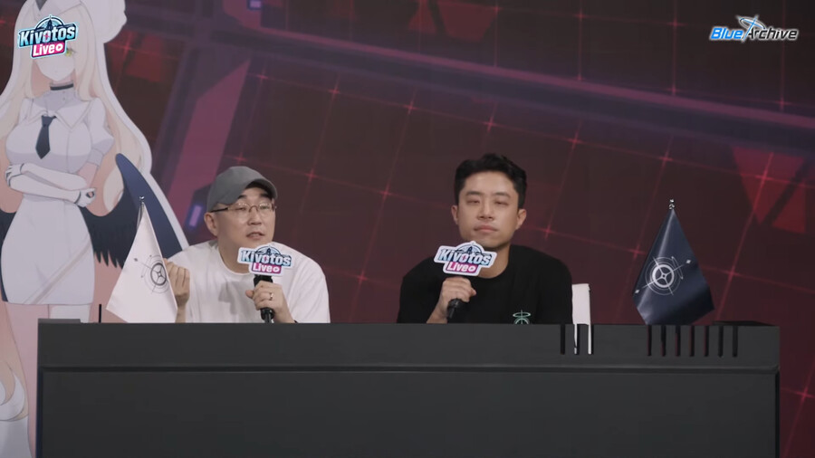
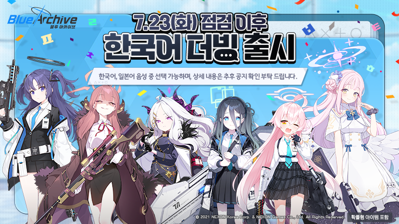
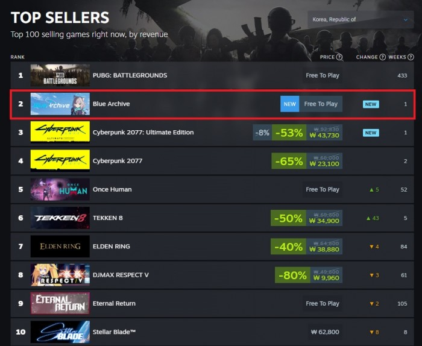

Hello, this is Asrec Studio.
Today, we'd like to introduce several games where Korean voiceovers were added thanks to the power of the players. In these cases, the decision to add voiceovers wasn't just part of the initial development roadmap; rather, it was the persistent requests from the fans that brought them to life. We'll also take a look at how these decisions successfully shifted the developers' standing in the market. 😆
CD PROJEKT RED: Hundreds of Emails That Flipped the Switch

CD PROJEKT RED (CDPR) is a developer well-known to Korean fans through The Witcher series and Cyberpunk 2077. However, the deep connection between CDPR and its Korean players isn't just about the gameplay; at its heart lies an epic saga of a hard-won Korean voiceover implementation.
Initially, Cyberpunk 2077 was planned to support Korean VO, but the plan was canceled in 2019 due to budget constraints and development scheduling issues. This led to a wave of disappointment and protests from Korean players, with emails and comments requesting the resumption of VO flooding into CDPR. Finally, on Hangeul Day 2020, CDPR co-founder Marcin Iwiński personally announced the revival of the Korean VO project, citing the community's overwhelming passion as the key reason.
"We have received hundreds of emails and thousands of posts asking us to reconsider (for adding Korean VO)."
— 「Cyberpunk 2077 Korean VO Resumed, to be Released in December」, GameMeca (Oct 9, 2020)
What was once a canceled voiceover was brought back to life by the fans. Consequently, Cyberpunk 2077 was launched with a full Korean VO featuring hundreds of talented actors. While the game itself faced initial criticism due to technical bugs at launch, the Korean VO was hailed as a "Gold Standard for Localization." Players praised the experience, noting that "even the background conversations of NPCs were fully dubbed, which took the immersion to a whole new level."

Following this, in 2022, CDPR made the decision to add a full Korean voiceover to The Witcher 3: Wild Hunt — a game that had been released seven years prior — as a free update. The scope was massive: a complete overhaul of the translation script, shifting formal "translation-style" dialogue into natural spoken language, and the implementation of AI lip-sync technology (JALI). From background NPC chatter to in-game songs, every single element was newly recorded. The response from the community was nothing short of explosive.

What CDPR Gained by Listening to Their Fans
The results were clear in the numbers. The Witcher 3: Wild Hunt, originally released in 2015, surpassed 1 million cumulative copies sold in South Korea by late 2024 — nearly nine years after its launch. For a console package game to hit the 1-million mark in the Korean market is an almost unprecedented achievement. Even among locally developed titles, reaching this milestone is incredibly rare in Korea. To celebrate, CDPR released a special thank-you video and exclusive artwork featuring Geralt wearing Korean traditional armor.
Beyond the sales, CDPR's reputation in Korea also took a huge turn. The reaction was so intense that some fans even joked, "Seeing them go all out with a full Korean VO years later — when it probably wouldn't even move the needle for sales — made me wonder if they owed Korea a huge favor." The community was buzzing with praise, with people saying things like, "Full VO for an old game? Unbelievable." and "This post-launch support is on another level." Naturally, CDPR became known as "The studio that's 100% serious about its Korean fans."
Blue Archive: A Response to the Fans' Dedication

Blue Archive, developed by Nexon Games and published by Nexon, is a mobile title that has built a massive, dedicated fandom — particularly in Korea and Japan — since its 2021 launch. At release, character voices were available only in Japanese, and the story lacked full voiceovers. This led to a steady stream of requests from Korean players for a native VO, with messages constantly piling up on official communities and social media.

Announcing the Korean VO Plan at the 3.5th Anniversary Livestream
Then, in July 2023 — three years into the service — Nexon Games surprised everyone by announcing the Korean voiceover project during their 3.5th-anniversary livestream. Executive Producer Yong-ha Kim shared the reason behind this decision:
"We decided to begin the Korean voiceover project to give back to the players who have shown so much love and support for Blue Archive."
— 「Nexon to Update Blue Archive with Korean Voiceovers」, Global Economic (July 21, 2023)

When the update news first broke, the reaction within the community was electric. Following about a year of intensive work, Korean voices were finally added to every character on July 23, 2024. Interestingly, the development team had some deep internal deliberations before making this move. Their main concern was whether adding specific voices might actually limit the players' imaginations, as fans had been enjoying the characters in their own unique ways for years without VO.
"We had concerns and internal deliberations about whether this was the right direction. However, thanks to the immense support and positive feedback, the entire team has gained a fresh burst of energy."
— 「Blue Archive: Paying Attention to Detail Down to Character Speech Patterns in Korean VO」, This Is Game (2025)

Reached No. 2 in Korea Top Sellers on Steam within just 5 days of launch
Empowered by the overwhelmingly positive response from players, Nexon Games officially launched the Steam PC client in July 2025, alongside the first update for the main story's Korean voiceover. The results were clearly reflected in the data. Within just five days of its Steam release, Blue Archive climbed to 2nd place in domestic revenue and recorded 22,000 concurrent players. The Steam user reviews started at "Overwhelmingly Positive," and the game secured the top spot in both the "Top New Releases" and "Trending Free-to-Play" categories.
The Significance of Voiceovers in the Korean Gaming Market
The starting point for both cases was the same: the "earnest voices of the fans." CDPR responded to the passion of fans who sent hundreds of emails, reviving a canceled project, while Blue Archive answered requests that had been building up for three years. Neither studio stopped at simply fulfilling a request; they used the enthusiastic response as a springboard to expand their VO efforts and deepen their communication with players.
The results were proven through both data and reputation. CDPR built unparalleled trust as a "devoted developer" among Korean gamers, and Blue Archive achieved record-breaking success, reaching No. 2 in domestic revenue immediately after its Steam launch. Of course, these milestones weren't achieved through voiceovers alone. However, it is undeniable that the process of listening to and acting on user feedback cultivated the kind of powerful fandom support that money can't buy.
Ultimately, in the Korean market, a voiceover is more than just a convenience feature — it is the clearest indicator of how much a developer respects its players. Responding to the voices of the community leads to solid trust, which in turn creates a virtuous cycle that determines a game's long-term standing and the scale of its fandom. Beyond a matter of cost, Korean voiceover has become the most powerful way for a developer to prove its sincerity toward Korean players.
Thank you for reading. 😊